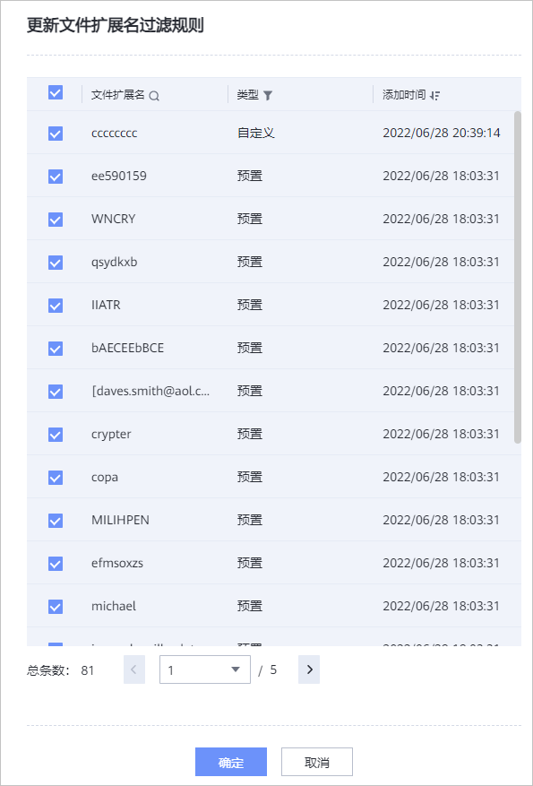

如果需要更新租户的文件扩展名过滤规则，请参考本节操作。
前提条件
如果需要对租户新增要拦截的文件扩展名，请先参考创建文件扩展名过滤规则创建文件扩展名过滤规则。
操作步骤
- 在导航栏选择“数据安全 > 防勒索 > 勒索检测设置”。
- 在“勒索检测设置”页签，单击某个租户所在行的。
系统弹出“更新文件扩展名过滤规则”窗口。

对于列表中的文件扩展名过滤规则，请根据需要勾选或取消勾选。所有已勾选的文件扩展名过滤规则会自动关联到当前租户。

所有已关联到当前租户的文件扩展名过滤规则默认勾选。
- 单击“确定”。